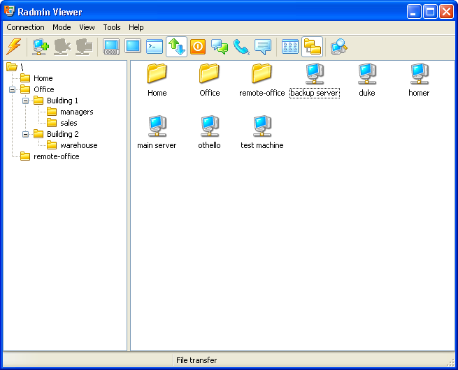

Radmin
Radmin создан компанией «Famatech», которая является одним из мировых лидеров в области разработки систем
удаленного управления компьютерами. С момента своего основания в 1999 году они разрабатывают одни из лучших решений
в своей области, которые широко используется для обеспечения технической поддержки пользователей, администрирования
корпоративных сетей, удаленной работы и решения многих других задач.

Отличительными чертами программы
является простота в использовании при больших возможностях и не высокой цене.
Основные преимущества, которые
позволяют использовать ее с максимальными возможностями, это:
- Непревзойдённая скорость работы с технологией DirectScreenTransfer
- Высочайший уровень безопасности по стандарту AES
- Удаленное управление на аппаратном уровне с поддержкой технологии Intel AMT
- Полная совместимость с Windows
- Совместимость с Wine (удаленный доступ с машин, где установлена ОС Linux)
- Безопасный обмен файлами с функцией «докачки»
- Поддержка нескольких одновременных соединений
- Двусторонняя работа с буфером обмена с поддержкой Unicode
- Защита от угадывания пароля с задержкой после пяти последовательных неудачных попыток
- Запись в лог файл имени пользователя и DNS расшифровки его адреса
- Простота в использовании
- Предоставляется 30-дневная пробная версия программы
- Преимущества для зарегистрированных пользователей:
- Бессрочная лицензия
- Полная техническая поддержка по e-mail